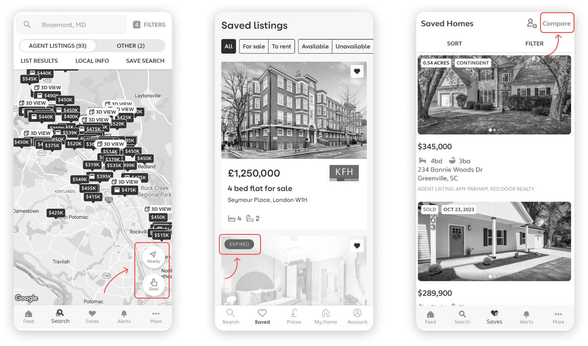
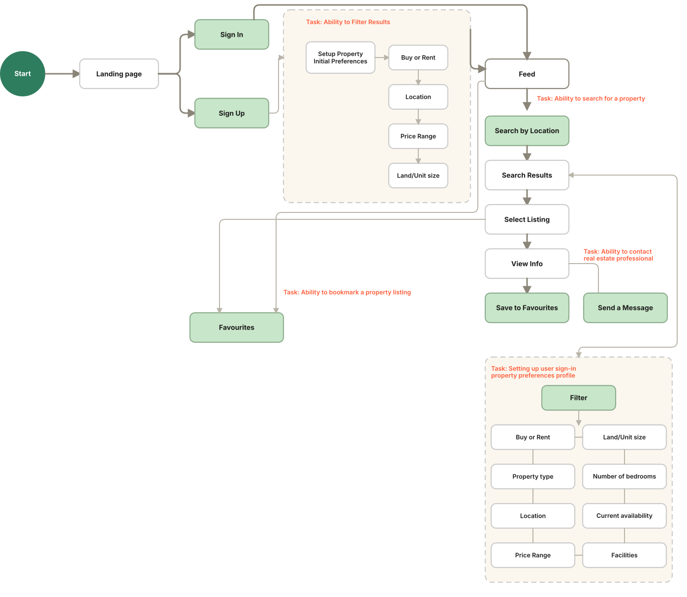
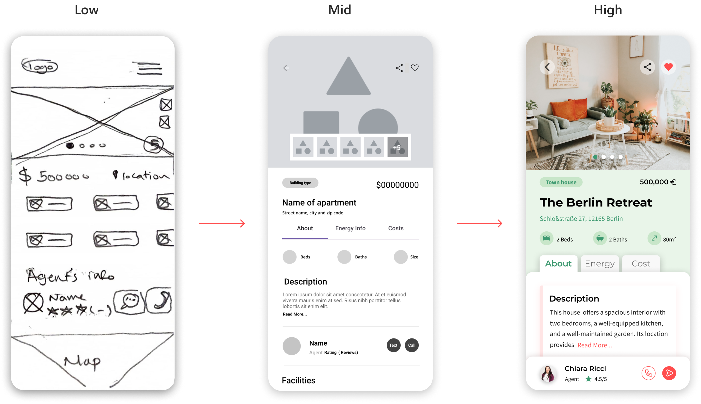
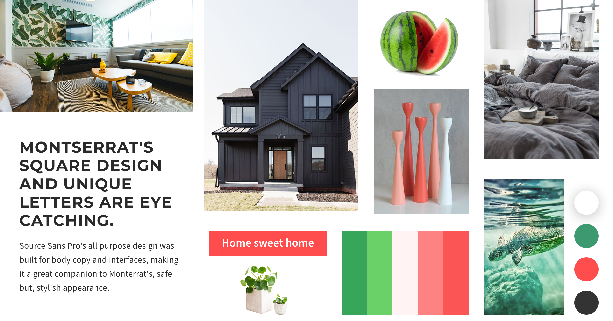
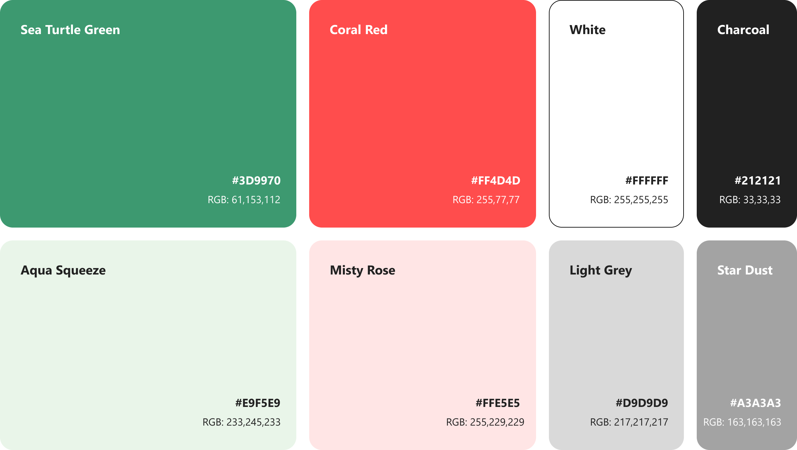
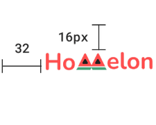
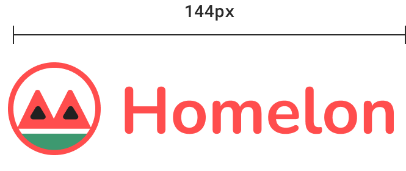
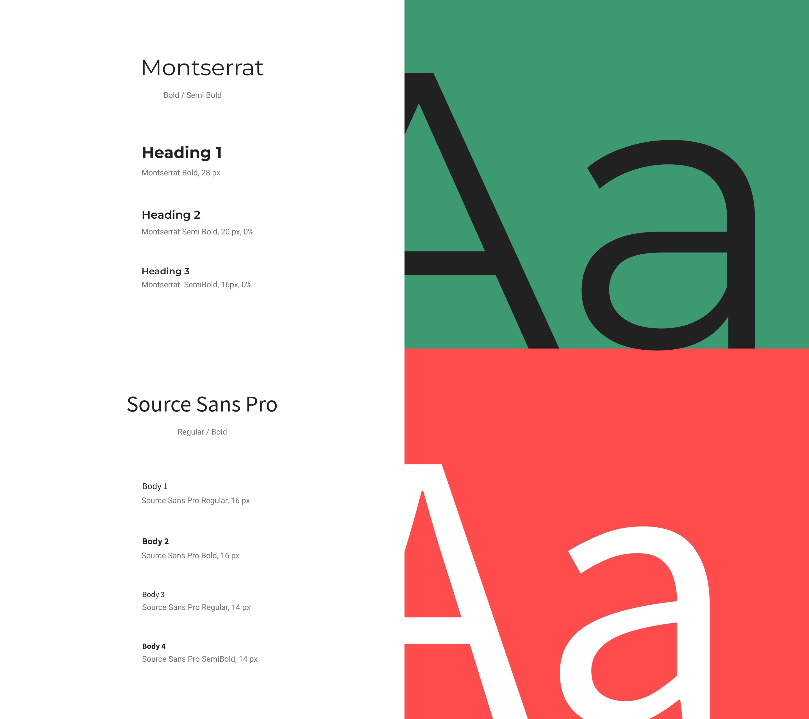
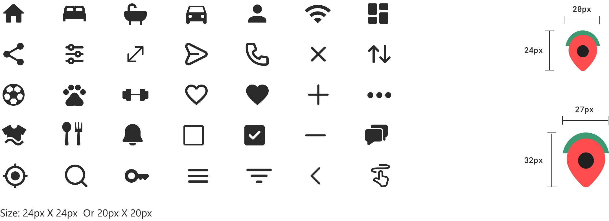
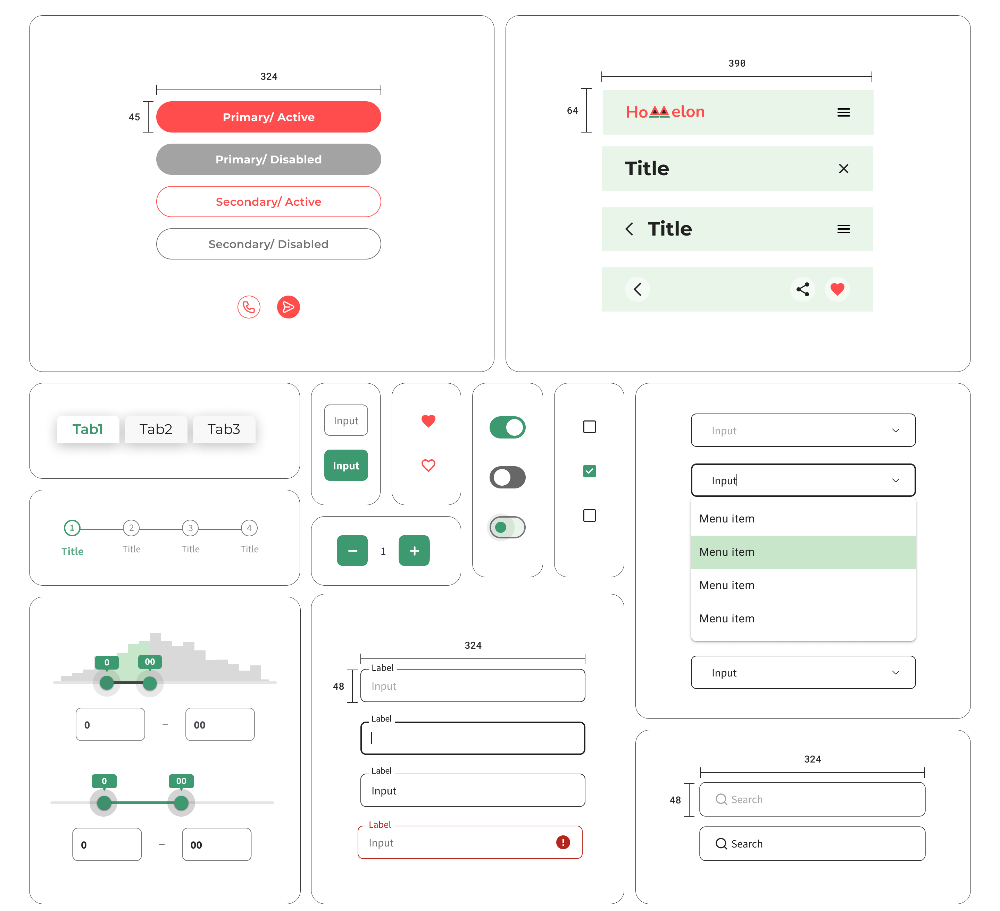

Real estate listings drown new buyers in information.
Today's real estate apps overwhelm new buyers with dense listings and unclear navigation, making it hard to sift through options efficiently. Homelon's goal is to help first-time buyers make informed, financially confident decisions by simplifying how listings are presented and compared.
The user research brief covered user needs but skipped competitive analysis. I audited three apps — Trulia, ImmoScout, and Zoopla — to understand market conventions and identify the essential functions a real estate app needs before designing the user flow.

From the user stories I was given, I prioritized the ones most critical to the real estate use case, using the competitive audit to judge relevance.
Not more listings. Better comparison.
More filters or denser listings would only add noise. What a buyer choosing between two similar properties actually needs is to hold them side by side and see where they differ. That reframes the job: not more information, but an informed, financially confident decision — and every screen that follows, from onboarding to the comparison table, serves that one idea.
After learning about what users need and studying the competition, the main features for the app became clear. Using this understanding, I created user flows to map out the steps users need to take to reach their goals. To make it easier to spot the key features of the app, I've used a light green color to highlight them.

What each screen had to prove.
Wireframes to high-fidelity
Based on the user flow, I started with low-fidelity wireframes to nail down the app's fundamental functionality. Mid-fidelity passes then tested layout, visual hierarchy, and spacing. From there, I defined the style guide and moved into high-fidelity screens.

Moodboard
The moodboard set the emotional target before any interface work started — Coral/Watermelon Red for energy and ambition, Sea Turtle Green for stability and growth, and Charcoal for professionalism. Every colour and shape decision that followed traces back to this board.

Watermelon palette
The palette pairs Sea Turtle Green — nature, stability — with Coral/Watermelon Red — energy, ambition — balanced by Charcoal for professionalism. Together, green and red strike a deliberate balance between stability and excitement: reassuring enough for a financial decision, energetic enough to feel like progress toward a goal.

One mark, two lockups
The logo keeps the same rounded, filled shapes everywhere it appears, but isn't one fixed lockup — a compact icon-only mark runs inside the app itself, sized to a 32px grid, while the full wordmark carries the same shapes onto the website and tablet, where there's room for it.


Typography
Montserrat's bold, geometric letterforms carry headings, where the app needs to grab attention. Source Sans Pro handles body copy and UI text — a plainer companion built for legibility at small sizes.

Iconography
Icons carry the same rounded-corner language as the rest of the interface, sized to a consistent 24px (or 20px where space is tight). The location pin pulls its colour directly from the watermelon palette rather than sitting in plain black.

UI elements
Buttons, inputs, toggles, and tabs all round to the same corner radius as the icons and logo, so no control on screen reads like it was borrowed from a different design system.

Comparison, close at hand.
Search
From the search screen, users see both listings and a map on the same screen — scrolling through listings with a swipe-up gesture or tapping into the map to search visually. A hamburger menu and filter controls sit alongside the search so buyers can narrow results without leaving the flow.
Favourite & Compare
Saved listings aren't just a bookmark list. Selecting properties in Favourites triggers multi-select — pick two or more, then compare them side by side across size, build year, and local factors like schools, shops, and traffic. Tabs for About, Energy, and Cost let the comparison go deeper on demand. This is the app's core decision-making tool: no more holding two listings in memory while scrolling back and forth.
Property Info & Contacts
The property detail screen surfaces everything — visual and written — a buyer needs to decide and act, with a direct path to contacting an agent and a confirmation once that message is sent.
Challenges
The project's duration was short, requiring me to focus primarily on the UI aspect of the app. Despite being given the user research, I conducted additional research into competitor apps and user flow — vital for a thorough understanding of requirements and for refining the UI to meet the project's needs.
Future Steps
I'd add an affordability estimate to the comparison table, showing estimated monthly cost alongside size, schools, and traffic. Default mortgage rates give an initial figure, and buyers can adjust the rate and term to match their own situation — keeping financial information next to lifestyle factors, no separate calculator needed.
Homelon simplifies real estate search by putting comparison at the center of the decision, not buried behind separate listing pages.
Working under a tight deadline meant prioritizing ruthlessly — a single cohesive moodboard early on kept the design language consistent across every screen without requiring extra iteration later. The clearest next steps are laid out above — validating the design with real buyers and rounding out the visual language it started with.